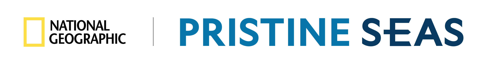

Tidy tools for Pristine Seas expedition science
tidyseas is built for the Pristine Seas research team and the collaborators and partners who work with us. Its tools carry an expedition’s data the whole way, from raw field sheets to the shared database to the report, the same way every time.
The package is at the very beginning. Tools will be added as they are ready and documented on the package site.
Installation
# install.packages("pak")
pak::pak("pristine-seas/tidyseas")Getting help
Open an issue for bugs and requests. The package is maintained by the Pristine Seas science team. To cite it, run citation("tidyseas").
